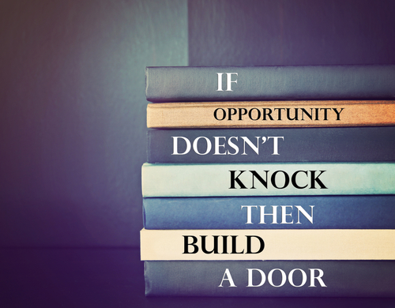

<!DOCTYPE html>
<html lang="en">
<head>
  <meta charset="UTF-8">
  <title>JQuery</title>
  <meta http-equiv="X-UA-Compatible" content="IE=edge,chrome=1">
<meta name="viewport" content="width=device-width, initial-scale=1">
<meta name="HandheldFriendly" content="True">
<meta name="MobileOptimized" content="320">
  <link href='https://fonts.googleapis.com/css?family=Oxygen' rel='stylesheet' type='text/css'>
  <link href='https://fonts.googleapis.com/css?family=Lobster' rel='stylesheet' type='text/css'>
    <link rel="shortcut icon" type="image/png" href="http://patriciakayparker.com/images/skull_pink_bow.png">
  <link rel="stylesheet" href="https://maxcdn.bootstrapcdn.com/bootstrap/3.3.7/css/bootstrap.min.css" type="text/css">
    <link rel="stylesheet" href="https://maxcdn.bootstrapcdn.com/bootstrap/3.3.7/css/bootstrap-theme.min.css" type="text/css">

  <link rel="stylesheet" href="https://maxcdn.bootstrapcdn.com/font-awesome/4.4.0/css/font-awesome.min.css">
  <link rel="stylesheet" type="text/css" href="../css/style.css"> 
 <!-- jQuery (necessary for Bootstrap's JavaScript plugins) -->
    <script src="https://code.jquery.com/jquery-latest.min.js"></script>
   <script src="https://code.jquery.com/ui/1.11.4/jquery-ui.min.js" type="text/javascript"></script> 
  <!-- Latest compiled and minified JavaScript -->
    <script src="https://maxcdn.bootstrapcdn.com/bootstrap/3.3.7/js/bootstrap.min.js"></script>
    <script>document.createElement( "picture" );</script>
  <script src="https://cdn.rawgit.com/scottjehl/picturefill/3.0.2/dist/picturefill.min.js" class="picturefill" async="async"></script>

    
  <script type="text/javascript">

        $(document).ready(function () {

            //
            //Follow mouse location
            //   

            $('body').mousemove(function (event) {
                $('#mousePosition').text("mouseX=" + event.pageX + " mouseY=" + event.pageY);
            }); // End Track Movement Function

            // Set image not to follow mouse
            var mouseFollow = false;

            //
            //Picture to follow mouse
            //  

            $('body').click(function () {
                if (mouseFollow) {
                    mouseFollow = false;
                } else {
                    mouseFollow = true;
                }
            }); // End set to follow script

            $('body').mousemove(function (e) {

                if (mouseFollow) {
                    mouseFollow = true;
                    $('.moveImage').offset({
                        left: e.pageX,
                        top: e.pageY + 1
                    });
					$('#mousePosition1').text("pictureX=" + e.pageX + " pictureY=" + e.pageY);
					//track position of picture
                }
            }); // End follow script


        }); // end ready script
    </script>
</head>
<body class="sfooter">
<div class="sfooter-content">  
    
 <div class="wrap"> 
   <header class="jumbotron">
   <p> 
   <picture></picture>
   </p> 
   </header>
    <h1 class="text-center">jQuery</h1>
  	<hr>
  	<div class="article">

        <p>Click to freeze picture, Click a second time to move picture again.</p>

        <h3>Mouse Current Postion</h3>
        
        <p id="mousePosition"></p>
		<p id="mousePosition1"></p>
		
		
         
    </div>
 </div> 
 </div>
    <footer class="footercolor">
        <h2 class="text-center">Home</h2>
        <p class="text-center">
            <a href="http://patriciakayparker.com/it411/index.html">
            <picture></picture>
            </a>
        </p>
    	<h2 class="text-center">Patricia Parker</h2>
    </footer>
</body>
</html>